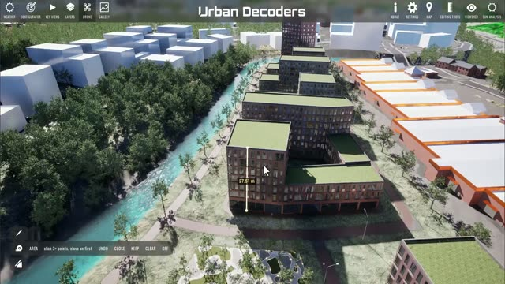
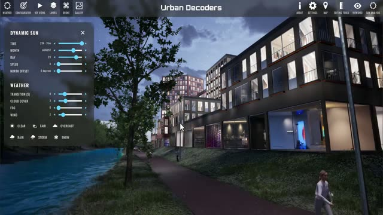

(01)
Unreal Engine 5のデジタルツイン
観るのではなく、歩く。
敷地・地区・都市の測地参照モデルをUnreal Engine 5で動かします。地形、周辺環境、インフラ網、そして計画案をひとつのシーンに、明示したCRSの実座標で配置。リアルタイムだからこそ、クライアントも委員会も住民も、フライスルー動画を観るのではなく自分で歩けます。ホスティング済みリンク、デスクトップ版、あるいはピクセルストリーミングでインストール不要のブラウザ版として納品します。

Unreal Engine 5のデジタルツイン、インタラクティブなウェブサイト、360°バーチャルリアリティツアー、インタラクティブ・マッピング — 建築、不動産、都市計画のために。明示したCRSのひとつの測地参照モデルが4つすべてを支えるので、ウォークスルーもサイトもツアーも地図も、常に同じ計画案です。
計画案を相手の手に委ねる4つの方法。すべて、ひとつの測地参照モデルから生まれます。Unreal Engine 5上のリアルタイムツイン、スクリーンショットではなくモデルそのものを載せたウェブサイト、中に立てる360°ツアー、そして実際の地面の上に全レイヤーを重ねた地図。
観るのではなく、歩く。
敷地・地区・都市の測地参照モデルをUnreal Engine 5で動かします。地形、周辺環境、インフラ網、そして計画案をひとつのシーンに、明示したCRSの実座標で配置。リアルタイムだからこそ、クライアントも委員会も住民も、フライスルー動画を観るのではなく自分で歩けます。ホスティング済みリンク、デスクトップ版、あるいはピクセルストリーミングでインストール不要のブラウザ版として納品します。
すべてのレイヤーを、実際の地面の上に。
プロジェクト自身のGISから組み立てるウェブ地図と地図型ビューア。区画、所有者、規制、交通、生活施設、商圏、歩行者量を、検索・絞り込みできる形で、本来の位置に描きます。ツインが読むのと同じレイヤーを、リンクひとつで誰でも開ける地図として公開。CRSを明示し、出典も明記します。
ボリューム案、日照、日影、眺望を実際の敷地上で計算し、講評会でもクライアント会議でもコンペ提出でも通用するウォークスルーにします。Revit、Rhino、Grasshopperのモデルを渡していただければ、ツインとしてお返しします。
住戸・区画ブラウザ、360°ツアー、販売センターの画面を、すべて同じ計画案から生成。設計変更はそのすべてに反映されます。購入検討者は、建つ前に自分の階からの眺めを確かめられます。
検証済みの眺望、数値を伴うシナリオ比較、そして住民が自分の通りから歩ける意見募集。コメントはその場所に紐づけて記録され、都市計画の提出資料へそのまま書き出せます。
地形、区画、ネットワーク、制約条件、建物のデータを、GIS・BIM・オープンデータから集めます。それを、座標系（CRS）を明記したひとつの基盤にまとめ、実際の座標に合わせます。完成したモデルは、誰でもリンクから開けるWebビューアとして提供します。計画どおりの姿も、現在の街の動きも表示できます。



タイルにカーソルを合わせると再生します。ストックポート・イーストのツインで収録しました。


タイルにカーソルを合わせると再生します。ストックポート・イーストのツインで収録しました。
ボリューム、密度、フェーズ計画、日射、眺望、公共交通へのアクセスを、実際の敷地でモデル化します。案ごとに比較でき、パラメータを動かすと数値も再計算されます。申請用の検証済み眺望（Verified Views）と景観影響の資料も用意します。そのため、計画委員会に示すのは絵ではなく根拠になります。
その場所ですでに生まれているデータをつなぎます。交通量カウンターと信号システム、バスと鉄道のリアルタイムデータ、CCTV解析、大気質モニター、歩行者通行量センサー、建物設備などです。これらを実際の場所の上に表示し、リアルタイムで更新します。履歴も残るので、見えてきた傾向を意思決定につなげられます。


タイルにカーソルを合わせると再生します。ストックポート・イーストのツインで収録しました。



タイルにカーソルを合わせると再生します。ストックポート・イーストのツインで収録しました。
住民は自分の住む通りから計画案を見て回り、現在の様子と比べ、コメントしたい場所に直接ピンを立てます。すべて記録され、書き出せます。そのため、意見募集の報告書はほぼ自動でまとまり、反対意見も内容を理解したうえで寄せられます。まちびらき後は、同じツインがその場所を運営するダッシュボードになります。


対象エリアのWebビューアを、私たちがホスティングして提供します。レイヤー、ストーリー、POIをリンクひとつで見られます。どのデバイスでも使え、インストールは不要です。
意見募集のイベント、展示会、委員会室で使う大型タッチ画面です。ビジターセンターへの常設にも対応します。
ツインから、歩行者視点とドローン視点のウォークスルーをつくります。Web版、または発表会や公開イベント向けのVRとして提供します。
まちびらき後は、同じツインでその場所を運営します。資産、利用状況、環境、歩行者通行量をひとつの画面で確認でき、しきい値に応じてアラートを出します。
ビューアにある20のツールの一覧は、機能一覧をご覧ください。
ツインが役立つのは、手元にあるデータを取り込めるときだけです。Revit・Rhino・Grasshopperのモデル、SketchUp・AutoCAD・3ds Maxのファイル、QGISのレイヤー、Blenderのシーン、Excelの一覧表を読み込み、実際の座標に合わせたひとつの基盤にまとめます。結果は同じ形式でお返しします。
ひとつの敷地、3つのレイヤーを数週間で。
地区全体で、計画、検証、意見募集を行います。
まち全体を、最初から最後まで、動き続けるツインにします。
すべての案件は、支えるべき意思決定に合わせて作業範囲を決めます。敷地の範囲とご検討の論点をお送りいただければ、区分とスケジュールをご提案します。